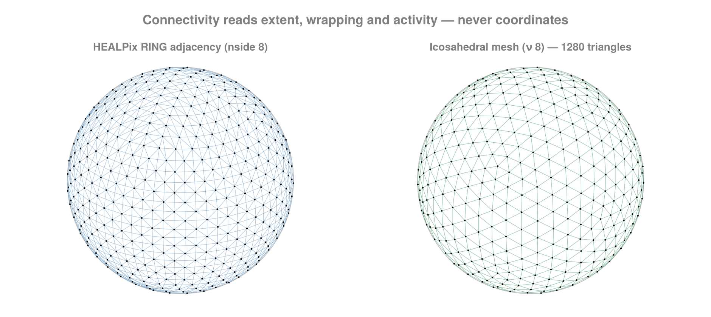

Stencils & Connectivity
Connectivity answers: which cells are neighbours?
Stencil shapes
A stencil is a neighbourhood shape in index space. It carries no dimensionality — the same shape applies to a 2-D and a 5-D grid — and its shape and radius live in its type, so the offset set is built at compile time and a loop over it unrolls.
using FlowGeometries: FlowGeometries as FG
S = FG.Stencils
S.offsets(S.Axial(1), Val(2))((-1, 0), (1, 0), (0, -1), (0, 1))S.offsets(S.Moore(1), Val(2))((-1, -1), (0, -1), (1, -1), (-1, 0), (1, 0), (-1, 1), (0, 1), (1, 1))| shape | offsets | meaning |
|---|---|---|
Axial(r) | 2·N·r | axis-aligned only, ±k·êᵈ for k = 1…r |
VonNeumann(r) | — | the L¹ ball, 0 < ‖δ‖₁ ≤ r |
Moore(r) (alias Vertex) | (2r+1)^N − 1 | the L^∞ ball, the surrounding box |
Diagonal(r) | 2^N·r | pure diagonals only |
Anisotropic(radii) | — | a box with its own radius per direction |
Custom(offsets) | as given | an explicit offset set |
Axial(1) and VonNeumann(1) are the same four-in-2-D set; beyond radius 1 they differ, because VonNeumann admits diagonal combinations whose step count still fits.
S.nstencil(S.Axial(2), Val(2)), S.nstencil(S.VonNeumann(2), Val(2)), S.nstencil(S.Moore(2), Val(2))(8, 12, 24)Any dimension:
S.nstencil(S.Axial(1), Val(5)), S.nstencil(S.Moore(1), Val(5))(10, 242)S.reach(S.Anisotropic((3, 1)), Val(2)) # halo width per direction(3, 1)A symbol could only be resolved at run time, so the neighbour iterator built from it would not be concretely typed and every cell of a traversal would allocate. stencil = S.Moore(2) is free; there is no symbol form to reach for.
Your own shape
A shape supplies Stencils.offsets and nothing else. Put whatever the offsets depend on in the type, so the tuple is inferable — then nstencil, reach, foreach_offset, fold_offsets and every neighbour query work on it, with the loop still unrolled and nothing allocated.
struct Upwind{R} <: S.AbstractStencil end
Upwind(r::Integer) = Upwind{Int(r)}()
S.offsets(::Upwind{R}, ::Val{N}) where {R,N} =
ntuple(i -> ntuple(d -> d == cld(i, R) ? mod1(i, R) : 0, Val(N)), Val(N * R))
S.offsets(Upwind(2), Val(2)), S.nstencil(Upwind(2), Val(3)), S.reach(Upwind(2), Val(2))(((1, 0), (2, 0), (0, 1), (0, 2)), 6, (2, 2))gu = FG.Grids.StructuredGrid(FG.Geometry.CartesianGeometry(),
range(0.0; step = 1.0, length = 6),
range(0.0; step = 1.0, length = 5))
FG.Connectivity.nneighbors(gu, 2, 2; stencil = Upwind(1)),
FG.Connectivity.nneighbors(gu, 6, 5; stencil = Upwind(1))(2, 0)Two different things get called a radius, and they are separate types. Stencils.CellRadius counts cells in index space; Stencils.MetricBall is a physical distance measured through the geometry. On a stretched or spherical grid the number of cells within a given distance varies across the grid, so the two cannot be collapsed into one.
Neighbourhoods by distance
A Stencils.MetricBall is queried with Connectivity.neighbors_within and its buffer/counting forms — every cell whose centre lies within the given physical distance, under the geometry's own metric:
geo = FG.Geometry.SphericalGeometry() # Earth radius, metres
λ = range(0, 2π; length = 25)[1:24]
φ = range(-π/2, π/2; length = 13)
g = FG.Grids.StructuredGrid(geo, λ, φ)
ball = S.MetricBall(2.0e6) # everything within 2000 km
FG.Connectivity.nneighbors_within(g, 5, 7; ball = ball)4The same call near a pole finds many more cells, because 2000 km spans every longitude there — which is exactly why this cannot be a stencil:
FG.Connectivity.nneighbors_within(g, 5, 13; ball = ball)47A bare number works as the ball, and the buffer form follows the neighbors! pattern — size with the count, fill in place:
n = FG.Connectivity.nneighbors_within(g, 5, 7; ball = 2.0e6)
buf = Vector{Int}(undef, n)
FG.Connectivity.neighbors_within!(buf, g, 5, 7; ball = 2.0e6)
buf4-element Vector{Int64}:
125
148
150
173The candidate window is Connectivity.metric_window — O(1) per direction on any separable axis, uniform or stretched, given the minimum steps Connectivity.MetricTopology carries — and each candidate is then kept or dropped by the geometry's distance, so the result is a genuine metric ball: great-circle on a sphere, Vincenty on a spheroid, the chord where a radial or height direction is present. Periodic directions wrap by minimum image, so a ball sitting on the seam is the same ball as anywhere else:
FG.Connectivity.neighbors_within(g, 1, 7; ball = 1.5e6) ==
FG.Connectivity.neighbors_within(g, 1, 7; ball = S.MetricBall(1.5e6))trueDistance between two cells
Geometry.distance also takes two cell indices, resolving them through the grid's own topology. Across a periodic seam that is the short way round, not the full extent:
gper = FG.Grids.StructuredGrid(FG.Geometry.CartesianGeometry(),
range(0.0; step = 1.0, length = 10),
range(0.0; step = 1.0, length = 6);
periodic = true, period = 10.0)
FG.Geometry.distance(gper, (1, 1), (10, 1)), FG.Grids.displacement(gper, (1, 1), (10, 1))(1.0, (-1.0, 0.0))Grids.displacement is the signed per-direction offset that distance was taken from — a coordinate quantity, which is why it sits in Grids while the distance extends Geometry.distance.
Convolutions need every image, not the nearest one
A neighbour set visits each cell once, at its nearest image. A convolution on a torus cannot: with period L,
\[\\bar f(x) = \\int K(x-y) f(y)\\,dy = \\sum_k \\int_\\text{cell} K(x-y-kL) f(y)\\,dy\]
so once the kernel support exceeds L/2 one cell contributes through several images at different displacements. Connectivity.fold_within takes the convention as an argument — NearestImage or AllImages — and AllImages also widens the window, since metric_window's one-turn cap would itself discard those images.
Nx, Δx = 32, 62.5; Lx = Nx * Δx
axx = range(0.0; step = Δx, length = Nx)
gt = FG.Grids.StructuredGrid(FG.Geometry.CartesianGeometry(), axx, axx;
periodic = (true, true), period = (Lx, Lx))
count_within(conv, rad) = FG.Connectivity.fold_within(
(a, J, d) -> a + 1, 0, gt, 1, 1; ball = rad, images = conv)
count_within(FG.Connectivity.NearestImage(), 3500.0),
count_within(FG.Connectivity.AllImages(), 3500.0)(1023, 9844)Below L/2 the two agree exactly, so nothing that was already correct changes. Above it, filtering one Fourier mode with a Gaussian of width ℓ = L reproduces the analytic transfer exp(-k²ℓ²/4α) to roundoff under AllImages, while the nearest-image error stays at 40% no matter how far the support is widened — the images it drops cannot be recovered by searching further.
Summing images asserts that a periodic direction is a translation of the domain. On a sphere it is an identification instead — λ and λ+2π are the same point — so AllImages is refused there rather than counting one cell repeatedly.
self = true folds the centre cell too, at distance zero. A neighbour set excludes it; a convolution needs it, and it carries the kernel's largest weight.
To query every cell, materialize the whole graph once instead — Connectivity.build_connectivity_within is the ball analogue of build_connectivity, row k holding exactly what the per-cell query returns for cell k, and symmetric because the metric is:
csr = FG.Connectivity.build_connectivity_within(g; ball = 2.0e6)
FG.Connectivity.nedges(csr), FG.Connectivity.is_symmetric_adjacency(csr)(5184, true)What a ball query reads about the grid
The observation the stencil side of the module rests on is that a neighbour computation never looks at a coordinate. It reads three things — extent per dimension, wrapping per dimension, and which cells are active — and nothing else. That triple is IndexTopology, and it is why a curvilinear grid needs no separate implementation from a structured one: it is the N = 2 case of the same algorithm.
A ball query is the one thing that cannot work that way. It needs coordinates, and the smallest step per direction, which is what bounds the candidate window on a stretched axis. That is Connectivity.MetricTopology, the same idea for the metric path — and it is O(1) to build, because the per-axis reductions it needs are computed once when the grid is and stored as Grids.AxisStats:
mt = FG.Connectivity.MetricTopology(g)
FG.Connectivity.nneighbors_within(g, 5, 7; ball = ball, topology = mt)4So passing it changes nothing and omitting it costs nothing — the default is already free. There is no hoisting to remember here.
The spatial index is different: it is worth hoisting, and it is not built for a single query, because building one costs more than the one scan it would replace. Curvilinear and node grids have no separable axes for a window to bound, so without an index a query tests every cell.
Grids.cell_list is the one to reach for, and it needs no package at all. It bins the cell centres at the radius you mean to query at, and a query visits the bins its ball can reach:
gc = FG.Connectivity.unstructured_grid(FG.SphericalSampling.HEALPixSampling(8))
top = FG.Connectivity.MetricTopology(gc; index = FG.Grids.cell_list(gc; ball = 2.0e6))
FG.Connectivity.nneighbors_within(gc, 1; ball = 2.0e6, topology = top)18Every cell lands in exactly one bin — periodicity wraps the bin coordinate rather than replicating the point — so a query emits each cell once and needs no buffer to deduplicate into. That is what lets it run inside a kernel, and it is why the sweeps build one by default.
Connectivity.indexed is the alternative, a k-d tree, and needs NearestNeighbors:
using NearestNeighbors # loads the extension
gu = FG.Connectivity.unstructured_grid(FG.SphericalSampling.HEALPixSampling(8))
ixu = FG.Connectivity.indexed(gu)
scratch = FG.Connectivity.ball_scratch()
FG.Connectivity.nneighbors_within(gu, 1; ball = 2.0e6, topology = ixu, scratch = scratch)18The index only ever returns a superset of the ball — the exact distance ≤ r gate still decides membership — so an indexed query and a scan return the same cells, and loading the extension changes speed and nothing else.
A neighbour list is a set: which order the cells come back in is whatever enumerated them, and no query sorts, since that would put an O(m log m) pass on top of an O(m) query for something nothing needs. Connectivity.sort_neighbors! is there when you do want it. Connectivity.ball_scratch is the candidate buffer, one per task; without it each query allocates its own.
Sweeping every cell
Better still, do not write the loop. Connectivity.foreach_within and Connectivity.mapreduce_within walk every cell's ball and build the topology and the index once for the whole sweep, which is what makes them O(n log n) where the hand-written loop is O(n²) — 9× on a 9 216-cell curvilinear grid here:
FG.Connectivity.mapreduce_within((I, J, d) -> 1, +, 0, g; ball = 1.0e6) # total pairs within 1000 km1392FG.Connectivity.mapreduce_within((I, J, d) -> d, +, 0.0, g; ball = 1.0e6) # and the total distance2.0322300096525437e8foreach_within is the same traversal for an f that writes rather than reduces; under a threaded backend it runs on disjoint spans of cells, so what f writes must be determined by I. build_connectivity_within does the same hoisting internally.
The k nearest
A ball asks "everything within r". The other question is "the nearest k", and Connectivity.k_nearest answers it exactly under the same metric, on every architecture:
idx, dist = FG.Connectivity.k_nearest(g, 5, 7; k = 4)
dist4-element Vector{Float64}:
1.6679238996683806e6
1.6679238996683809e6
1.6679238996683809e6
1.667923899668382e6It widens a ball until k cells have been seen and keeps the k smallest in a bounded heap, so the result never depends on the starting radius and nothing is materialized along the way. Equal distances resolve by linear index, which is what makes an indexed query and a scan agree exactly. Connectivity.k_nearest! writes into your own buffers and allocates nothing.
The ball, and the part of it you can get to
A ball is not a connected patch. With a mask, or a concave domain, it can contain cells that are close to the seed in space but reachable from it only by leaving the ball. Both sets are useful and they are different algorithms, so reach names which one you get:
wall = trues(9, 9); wall[:, 5] .= false # a barrier through the middle
gw = FG.Grids.StructuredGrid(FG.Geometry.CartesianGeometry(),
collect(0.0:8.0), collect(0.0:8.0), wall)
length(FG.Connectivity.neighbors_within(gw, 5, 3; ball = 3.5)),
length(FG.Connectivity.neighbors_within(gw, 5, 3; ball = 3.5,
reach = FG.Connectivity.Connected(S.Moore(1))))(28, 25)Connectivity.Unrestricted is every cell within the radius, and the default. Connectivity.Connected is the connected component of that set containing the seed: it walks adjacency and prunes at the ball's edge, so it is a subset. The two agree whenever the ball is connected under the adjacency — always so on a maskless Cartesian StructuredGrid, where each index step moves monotonically in one coordinate — and Connected is strictly smaller wherever something separates two parts of the ball.
The two are easy to conflate, so it is worth being precise about why one cannot be computed as a cheaper version of the other. Take cells P (the seed), Q and R, adjacent only as P–Q–R, with d(P,Q) = 1.2r and d(P,R) = 0.8r. Walking outward from P and dropping anything farther than r stops at Q, so it never reaches R — which is inside the ball. That walk is not a broken Unrestricted; it is exactly Connected.
Adjacency has to be named, because only a node set carries its own: Connected() means direction-1 adjacency on the index-space architectures and the stored neighbour lists on an UnstructuredGrid, and Connected(stencil) sets it explicitly for the former. On the latter a stencil has no index space to mean anything in, so it is refused rather than ignored.
Querying neighbours

Three forms, in increasing order of how much they allocate:
out = Vector{Int}(undef, 8)
n = FG.Connectivity.neighbors!(out, grid, i, j; stencil = FG.Stencils.Moore(1)) # writes n indices
k = FG.Connectivity.nneighbors(grid, i, j) # just the count
it = FG.Grids.neighbors(grid, i, j) # lazy iterator, no arrayFlowGeometries.Connectivity.StencilNeighbors{FlowGeometries.Grids.StructuredGrid{FlowGeometries.Geometry.SphericalGeometry{Float64}, Float64, 2, Tuple{FlowGeometries.Grids.Periodic, FlowGeometries.Grids.Bounded}, Tuple{Vector{Float64}, Vector{Float64}}, FlowGeometries.Grids.SeparableMeasure{Float64, 2, Tuple{Vector{Float64}, Vector{Float64}}}, FlowGeometries.Grids.AllActive{2}}, 2, FlowGeometries.Stencils.Axial{1}}(StructuredGrid{Float64}(31×16), (3, 5), FlowGeometries.Stencils.Axial{1}(), true)stencil is any Stencils shape — Axial(r), VonNeumann(r), Moore(r) (alias Vertex), Diagonal(r), Anisotropic(radii) or Custom(offsets) — at any radius and in any number of dimensions. It is named by its TYPE, not by a symbol: a symbol could only be resolved at run time, and the neighbour iterator built from it would then allocate once per cell. active_only = true excludes masked-out cells from both ends of an edge.
Prefer neighbors! in hot loops. neighbors returns an iterator rather than a freshly built vector per cell, which would cost two heap allocations for every cell visited.
CSR
For a whole graph at once:
conn = FG.Connectivity.build_connectivity(grid) # or (sampling, args...)
FG.Connectivity.nnodes(conn), FG.Connectivity.nedges(conn)
FG.Grids.neighbors(conn, i) # a view into the flat array3-element view(::Vector{Int64}, 7:9) with eltype Int64:
2
4
34CSRConnectivity stores one flat neighbour array plus offsets — never a vector per node, which costs nnodes allocations and turns every later traversal into pointer chasing. Both buffers are typed independently and accept any Integer, so a large mesh can carry Int32 indices.
Building from a sampling never constructs a grid:
FG.Connectivity.build_connectivity(FG.SphericalSampling.GaussLegendreSampling(), 1000)FlowGeometries.Connectivity.CSRConnectivity{Vector{Int64}, Vector{Int64}}([1999, 2, 2000, 1, 3, 2001, 2, 4, 2002, 3 … 1996998, 1998997, 1998999, 1996999, 1998998, 1999000, 1997000, 1998999, 1997002, 1997001], [1, 4, 7, 10, 13, 16, 19, 22, 25, 28 … 7991976, 7991979, 7991982, 7991985, 7991988, 7991991, 7991994, 7991997, 7992000, 7992003])The neighbour graph of a tensor-product sampling is fixed by its axis lengths and longitude wrapping alone, so the axes are never evaluated — for Gauss–Legendre that alone would be an O(n²) root solve, to produce numbers the answer does not depend on.
Index topology directly
topo = FG.Connectivity.IndexTopology((nlon, nlat), (true, false), nothing) # mask = nothing → all active
conn = FG.Connectivity.build_connectivity(topo; stencil = FG.Stencils.Axial(1))FlowGeometries.Connectivity.CSRConnectivity{Vector{Int64}, Vector{Int64}}([31, 2, 32, 1, 3, 33, 2, 4, 34, 3 … 462, 493, 495, 463, 494, 496, 464, 495, 466, 465], [1, 4, 7, 10, 13, 16, 19, 22, 25, 28 … 1896, 1899, 1902, 1905, 1908, 1911, 1914, 1917, 1920, 1923])Useful when you have a shape and a wrapping rule but no grid, and enough to drive every stencil query in the package.
Dense and sparse adjacency
FG.Connectivity.adjacency_matrix(conn) # Matrix{Bool}
FG.Connectivity.adjacency_matrix!(A, conn) # into your buffer
# needs SparseArrays; see the Extensions page
# FG.Connectivity.sparse_adjacency_matrix(grid)496×496 BitMatrix:
0 1 0 0 0 0 0 0 0 0 0 0 0 … 0 0 0 0 0 0 0 0 0 0 0 0
1 0 1 0 0 0 0 0 0 0 0 0 0 0 0 0 0 0 0 0 0 0 0 0 0
0 1 0 1 0 0 0 0 0 0 0 0 0 0 0 0 0 0 0 0 0 0 0 0 0
0 0 1 0 1 0 0 0 0 0 0 0 0 0 0 0 0 0 0 0 0 0 0 0 0
0 0 0 1 0 1 0 0 0 0 0 0 0 0 0 0 0 0 0 0 0 0 0 0 0
0 0 0 0 1 0 1 0 0 0 0 0 0 … 0 0 0 0 0 0 0 0 0 0 0 0
0 0 0 0 0 1 0 1 0 0 0 0 0 0 0 0 0 0 0 0 0 0 0 0 0
0 0 0 0 0 0 1 0 1 0 0 0 0 0 0 0 0 0 0 0 0 0 0 0 0
0 0 0 0 0 0 0 1 0 1 0 0 0 0 0 0 0 0 0 0 0 0 0 0 0
0 0 0 0 0 0 0 0 1 0 1 0 0 0 0 0 0 0 0 0 0 0 0 0 0
⋮ ⋮ ⋮ ⋱ ⋮ ⋮ ⋮
0 0 0 0 0 0 0 0 0 0 0 0 0 0 0 1 0 1 0 0 0 0 0 0 0
0 0 0 0 0 0 0 0 0 0 0 0 0 0 0 0 1 0 1 0 0 0 0 0 0
0 0 0 0 0 0 0 0 0 0 0 0 0 0 0 0 0 1 0 1 0 0 0 0 0
0 0 0 0 0 0 0 0 0 0 0 0 0 … 0 0 0 0 0 1 0 1 0 0 0 0
0 0 0 0 0 0 0 0 0 0 0 0 0 0 0 0 0 0 0 1 0 1 0 0 0
0 0 0 0 0 0 0 0 0 0 0 0 0 0 0 0 0 0 0 0 1 0 1 0 0
0 0 0 0 0 0 0 0 0 0 0 0 0 0 0 0 0 0 0 0 0 1 0 1 0
0 0 0 0 0 0 0 0 0 0 0 0 0 0 0 0 0 0 0 0 0 0 1 0 1
0 0 0 0 0 0 0 0 0 0 0 0 0 … 0 0 0 0 0 0 0 0 0 0 1 0adjacency_matrix on a 1000² grid asks for a 10⁶ × 10⁶ Matrix{Bool} — 10¹² bytes. It exists for small grids and for testing. Use sparse_adjacency_matrix for anything real.
The sparse path builds CSC straight from the neighbour list by one counting pass and one placement pass — no coordinate triples, no sort, no permutation vector, and row indices come out ascending for free because the placement walks nodes in order.
For a symmetric adjacency with sorted rows the CSR and CSC arrays are the same arrays, so sparse_adjacency_matrix(grid) on a structured or curvilinear grid hands the connectivity's own buffers to the matrix rather than transposing into a second copy.
FG.Connectivity.is_symmetric_adjacency(conn) # what licenses that shortcut
FG.Connectivity.sort_neighbors!(conn) # order each node's block ascending, in placeFlowGeometries.Connectivity.CSRConnectivity{Vector{Int64}, Vector{Int64}}([2, 31, 32, 1, 3, 33, 2, 4, 34, 3 … 494, 463, 493, 495, 464, 494, 496, 465, 466, 495], [1, 4, 7, 10, 13, 16, 19, 22, 25, 28 … 1896, 1899, 1902, 1905, 1908, 1911, 1914, 1917, 1920, 1923])Threading
Every builder takes an opt-in backend; see Performance.
using ComputationalBackends: ThreadedBackend
FG.Connectivity.build_connectivity(grid; backend = ThreadedBackend())Results are bit-identical to serial, which the test suite asserts with == rather than a tolerance.
Sampling-specific topology
FG.Connectivity.build_connectivity(FG.SphericalSampling.HEALPixSampling(64)) # RING face-table adjacency
FG.Connectivity.build_connectivity(FG.SphericalSampling.CubedSphereSampling(), n) # with the gnomonic seam fold
FG.Connectivity.build_connectivity(FG.SphericalSampling.YinYangSampling(), nlon, nlat)
FG.Connectivity.healpix_neighbors!(out, nside, 0) # one pixel; 0-based pixel ids8HEALPix RING neighbours follow the standard face-table algorithm (Górski et al. 2005; Reinecke 2003). The offsets are walked in ring order, so the emitted ids arrive already ascending for ~99% of pixels and the dedup pass has almost nothing to move.
Mask topology
The mask's own shape is a grid property, so it is answered here.
C = FG.Connectivity
geo = FG.Geometry.CartesianGeometry()
m = trues(9, 9)
m[4:6, 4:6] .= false # an enclosed block
g = FG.Grids.StructuredGrid(geo, 0.0:1.0:8.0, 0.0:1.0:8.0, m)
C.count_holes(g), C.connected_components(g)[2](1, 1)count(C.interior(g)), count(C.boundary_cells(g)), count(m)(28, 44, 72)interior is the active cells whose whole stencil is active and in range; boundary_cells is the rest of the active set, and the two partition it. count_holes counts the connected inactive regions fully enclosed by active cells — an estimate of the active region's first Betti number. A region that reaches a non-wrapping edge is outside rather than enclosed, so wrapping a direction can turn one into the other:
gp = FG.Grids.StructuredGrid(geo, 0.0:1.0:8.0, 0.0:1.0:8.0, m;
periodic = (true, true), period = (9.0, 9.0))
C.count_holes(gp)1All of it is dimension-generic:
m3 = trues(7, 7, 7); m3[3:5, 3:5, 3:5] .= false
C.count_holes(FG.Grids.StructuredGrid(geo, 0.0:1.0:6.0, 0.0:1.0:6.0, 0.0:1.0:6.0, m3))1Index helpers
FG.Connectivity.linear_index(grid, i, j) # column-major, i fastest
FG.Connectivity.cartesian_index(grid, lin) # the inverseCartesianIndex(7, 1)